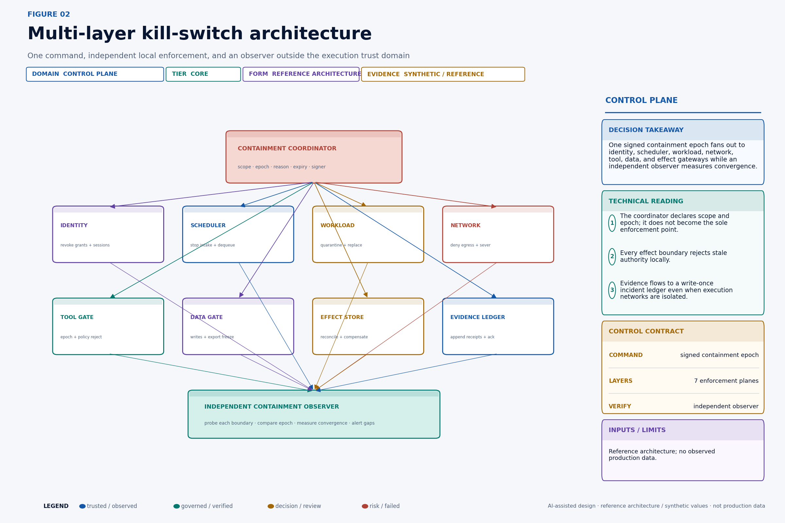
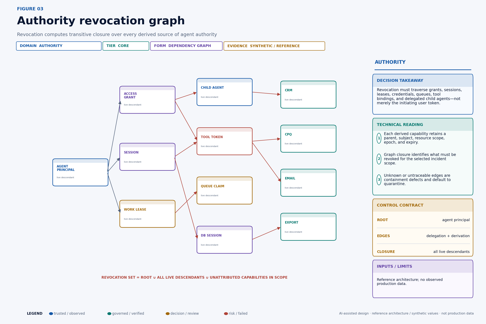
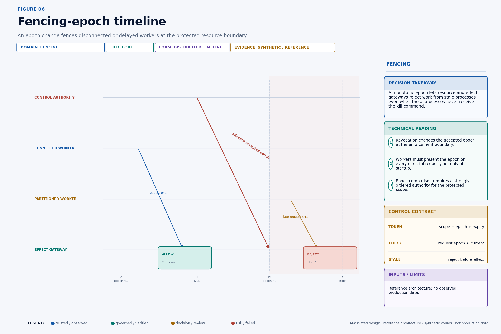
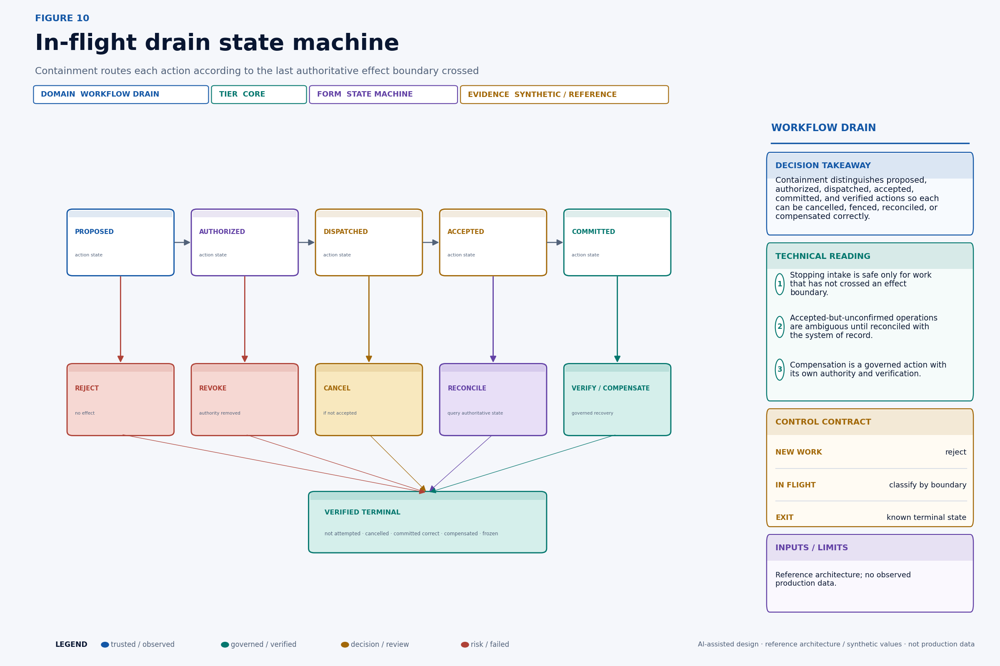
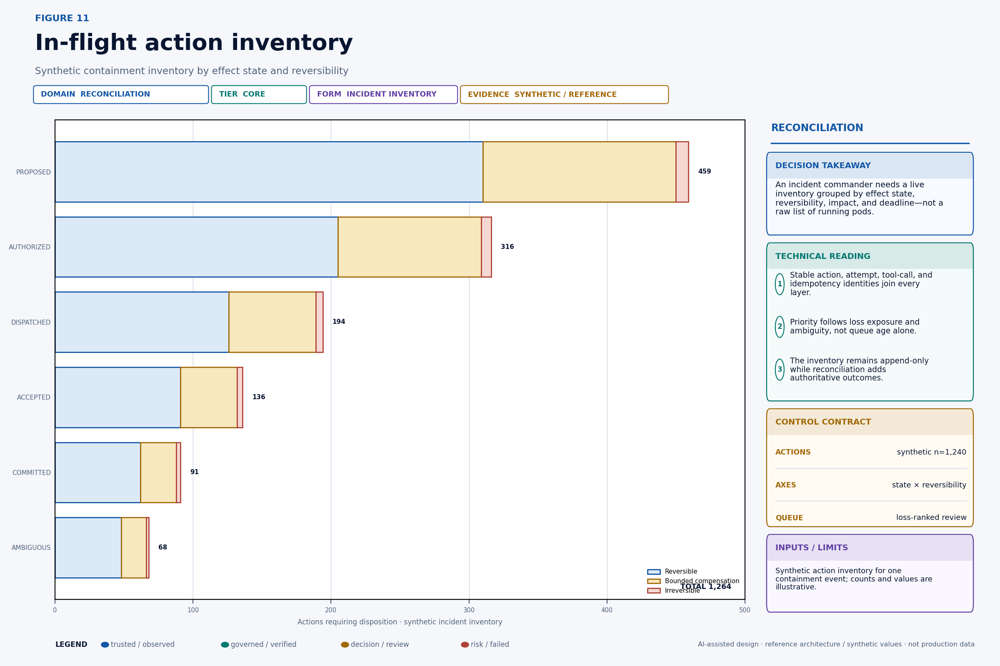
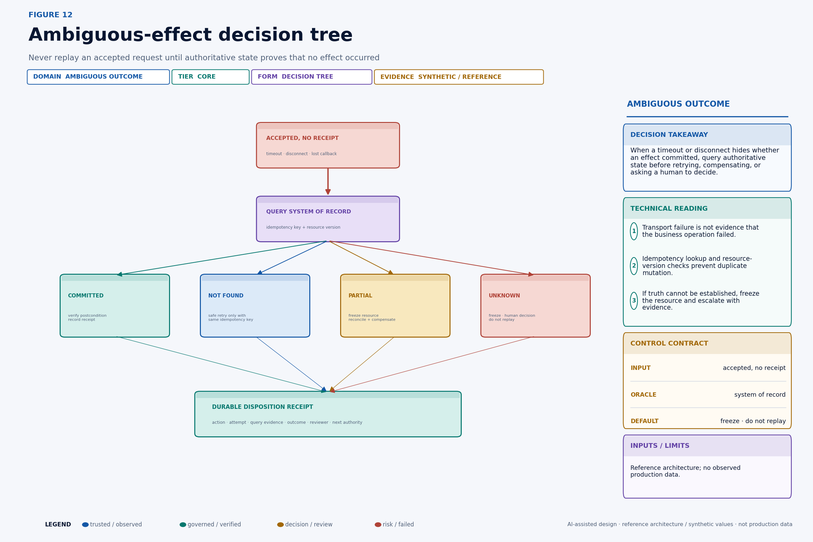
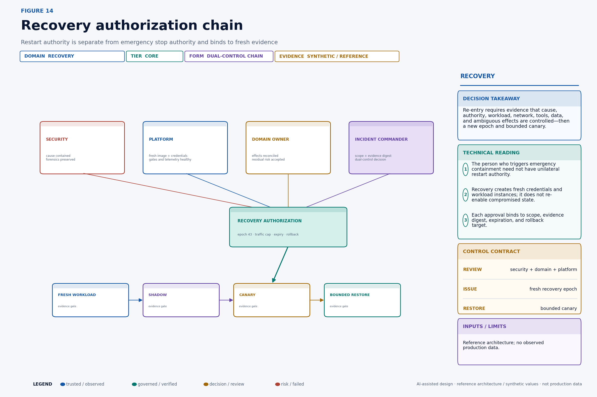
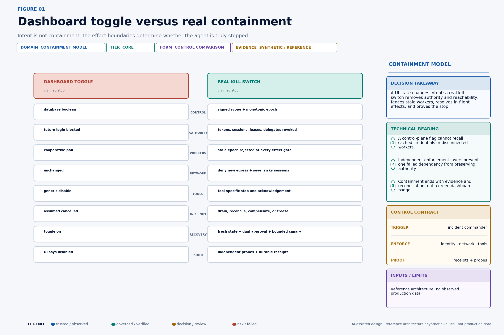
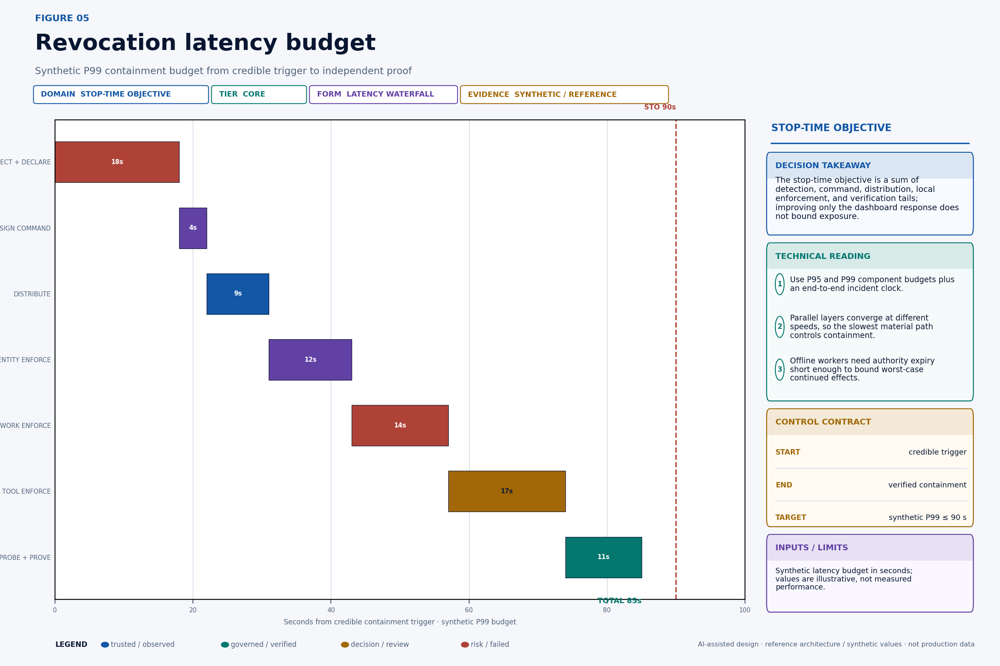
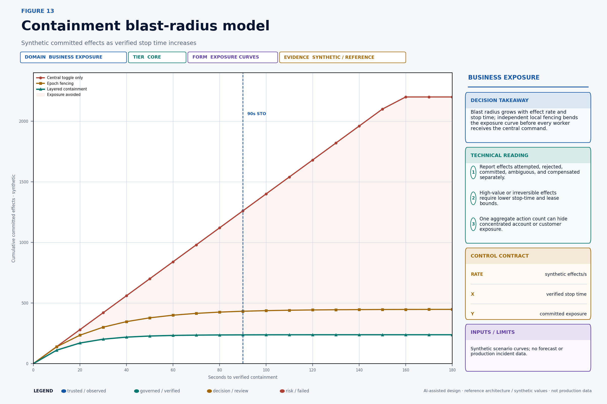

At 09:19, security clicks Disable agent. The dashboard turns green. One worker stops polling, but another is partitioned from the control plane, a third still has a cached vendor session and asynchronous jobs are already waiting on external queues. A price change commits at 09:21. Two emails leave at 09:23. The response team still cannot classify what was rejected, accepted, committed, duplicated or left ambiguous.
This story was written with AI writing and visualization assistance. The incident, action counts, latency budgets, exposure curves and control ratings are synthetic reference scenarios.
An agent’s authority is distributed across tokens, sessions, workload leases, delegated children, network paths, tool-side jobs and in-flight operations. A central flag records intent; it does not remove those capabilities. A real kill switch is a containment protocol: advance a monotonic epoch, revoke the authority graph, fence stale workers at effect boundaries, remove reachability, classify in-flight work, reconcile uncertain effects and require fresh authorization for recovery. It must also produce independent proof that every material boundary complied.

What this changes in production#
• Define containment scope independently of process identity.
• Propagate a signed containment epoch to every material enforcement point.
• Reject stale authority at tool and data effect boundaries, even when a worker is disconnected.
• Inventory actions by effect state, not only by running process.
• Treat recovery as a new, evidence-bound authorization event.
Decision table#
| In-flight state | Safe containment action | Retry allowed? | Required evidence |
|---|---|---|---|
| Proposed or authorized | Revoke and discard | Only with new authority | Revocation receipt |
| Dispatched, not accepted | Cancel or fence | After terminal proof | Queue/tool acknowledgement |
| Accepted, outcome unknown | Reconcile authoritative state | No blind retry | Effect query and action ID |
| Committed | Verify, compensate or freeze | Not as a duplicate action | Domain receipt and recovery decision |
Define what “stopped” means#
Containment needs a falsifiable claim. “The agent is disabled” is too vague. A useful claim is:
After containment epochebecomes effective for scopes, no request carrying an older epoch, expired lease, revoked grant, or out-of-scope authority can create a protected external effect; all previously accepted actions reach a verified terminal disposition within their reconciliation objective.
That claim separates two clocks. The authority stop clock ends when material effect boundaries reject stale authority. The business truth clock ends when every relevant in-flight action is known to be not attempted, cancelled, committed correctly, compensated, or deliberately frozen. The first limits new harm. The second establishes the organization's actual state.
Define the stop-time objective (STO) from the first credible containment trigger—not from the moment the command API receives a request—to independent proof at all material boundaries:
STO(scope) = t_verified_contained(scope) − t_credible_trigger(scope)Define the reconciliation-time objective (RTO_effect) separately:
RTO_effect(scope) = t_all_material_actions_disposed − t_containment_declaredThis story uses RTO_effect for effect reconciliation, not disaster-recovery recovery time. The naming distinction should be explicit in an operating environment.
Containment has three assurance levels. Cooperative stop asks healthy workers to stop. Enforced stop makes effect boundaries reject their authority. Verified containment obtains independent evidence that every boundary in scope is enforcing the new state and that residual in-flight work is inventoried. High-impact agents need the third.
Build independent containment layers#
The coordinator is a policy and evidence component, not a magical central choke point. It authenticates emergency operators, applies dual-control rules when time permits, creates a signed containment command, advances the appropriate epoch, distributes the command, and tracks acknowledgements. Each enforcement plane can continue rejecting stale work even if the coordinator later becomes unavailable.
The identity plane revokes grants, refresh tokens, sessions, signing rights, service-account bindings, and delegated capabilities. The scheduler plane stops intake, prevents new claims, and identifies queued and assigned work. The workload plane quarantines or replaces processes while preserving necessary forensic state. The network plane removes egress and terminates risky existing connections. The tool and data planes reject stale epochs and freeze protected resources. The effect store reconciles business outcomes. The evidence ledger preserves commands, local acknowledgements, probes, dispositions, and recovery approvals.
Do not make containment depend on one shared database row that every component must synchronously read. That creates a central availability dependency and can still leave cached decisions. Use pushed events for fast convergence, local monotonic state for enforcement, short-lived authority for a time bound, and polling or streaming recovery for missed events. The correct combination depends on the action's impact and infrastructure, but it should tolerate one notification path failing.
The containment command can use a canonical envelope:
{
"containment_id": "cnt_20260823_0919_0042",
"scope": {
"tenant_id": "tenant_north",
"principal_id": "agent_revops_17",
"include_descendants": true,
"effect_classes": ["crm.write", "cpq.write", "email.send", "export.create"]
},
"epoch": 42,
"mode": "DENY_AND_RECONCILE",
"reason_code": "SUSPECTED_COMPROMISE",
"issued_at": "2026-08-23T09:19:08.210Z",
"expires_at": "2026-08-24T09:19:08.210Z",
"issuer": "incident-command/prod",
"evidence_sink": "incident-ledger/cnt_20260823_0919_0042",
"previous_safe_epoch": 41,
"signature": "detached-jws-or-platform-equivalent"
}The signature protects command integrity and attribution. It does not make the command correct. Authorization policy must define who can stop which scope, whether emergency single-operator containment is allowed, which actions require later ratification, and how false or malicious triggers are handled. Stopping should usually be easier than restarting, but neither should be unauthenticated.
Revoke the entire authority graph#
An agent rarely holds one credential. A root identity may create a session; the session may obtain a short access token; the workflow may receive a lease; the worker may mint a tool-specific credential; the tool may create an asynchronous job; and a child agent may receive a narrowed delegation. Revoking only the root login misses live descendants.

Every capability record should include a stable identifier, principal, tenant, parent capability, issue time, expiry, resource and action scope, delegation depth, issuer, epoch, proof key or binding where applicable, and revocation state. The graph service should answer both directions: “What authority descends from this principal?” and “Which principal and grant produced this observed tool call?”
CREATE TABLE authority_edge (
capability_id text PRIMARY KEY,
parent_capability_id text,
tenant_id text NOT NULL,
principal_id text NOT NULL,
capability_type text NOT NULL,
resource_scope jsonb NOT NULL,
action_scope text[] NOT NULL,
issued_epoch bigint NOT NULL,
issued_at timestamptz NOT NULL,
expires_at timestamptz NOT NULL,
revoked_at timestamptz,
issuer text NOT NULL,
evidence_ref text NOT NULL
);Graph closure is an evidence requirement, not permission to place raw credentials in one database. Store identifiers, bindings, and revocation handles; secrets remain in the appropriate issuer or vault. When a vendor cannot expose revocation or session inventory, record the gap and shorten lifetime, remove direct reachability, or reduce the permitted action scope.
RFC 7009 standardizes an OAuth token-revocation endpoint and requires support for revoking refresh tokens while recommending access-token revocation support. The RFC also explains an important implementation reality: self-contained access tokens may not require a live authorization-server check at each resource request. Enterprise containment therefore cannot assume that calling a revocation endpoint instantaneously invalidates every cached bearer token at every resource server. Short expiry, introspection where appropriate, receiver-side deny state, sender-constrained credentials, and fencing complement revocation.
Fence stale workers with epochs#
Revocation says a capability should no longer be used. Fencing makes an effect boundary distinguish old authority from current authority. The control authority maintains a monotonically increasing epoch for the protected scope. A worker receives an authority envelope for epoch 41. Containment advances the accepted epoch to 42. Any later request presenting 41 is rejected even if the worker never received the shutdown message.

The source of epoch truth must provide ordering strong enough for the scope. Two coordinators cannot independently issue conflicting “latest” epochs. Use a transactional counter, consensus-backed control store, or platform primitive with atomic compare-and-set. Scope hierarchy requires care: a tenant epoch may supersede an agent epoch, and a global epoch may supersede both. Define the comparison rule and snapshot it in the receipt.
Kubernetes Lease objects are used for coordination functions including node heartbeats and leader election. That demonstrates the platform's lease concept; it does not make a Kubernetes Lease, by itself, an enterprise-agent kill switch. A work lease still needs resource-scope binding, short duration, epoch semantics, effect-gateway enforcement, and protection against a stale holder.
An effect-gateway decision can be implemented as one atomic policy transaction:
def authorize_effect(request, control_state, now):
if request.scope not in control_state.covered_scopes:
return deny("SCOPE_UNRESOLVED")
if request.epoch < control_state.current_epoch(request.scope):
return deny("STALE_EPOCH")
if request.lease_expires_at <= now:
return deny("LEASE_EXPIRED")
if control_state.is_contained(request.principal, request.action):
return deny("CONTAINED")
if not request.authority.allows(request.action, request.resource):
return deny("AUTHORITY_SCOPE")
if request.expected_resource_version != current_version(request.resource):
return deny("RESOURCE_VERSION")
return reserve_idempotency_and_allow(request)The check must occur at the boundary that owns the effect, not only in an SDK inside the potentially compromised agent. The reservation and allow decision should be atomic with idempotency registration where possible; otherwise two concurrent attempts can both pass before either records the action.
Drain by action state, not process state#
Stopping intake does not resolve work already in motion. The workflow engine needs a state machine aligned to effect boundaries. Proposed work has not received authority and can be rejected. Authorized work has authority but is not dispatched and can be revoked. Dispatched work may be cancellable. Accepted work has crossed a tool boundary but lacks a final outcome and must be reconciled. Committed work must be verified and, if wrong, compensated where permissible.

State transitions are events, not mutable labels with no history. Preserve who or what authorized the action, which epoch applied, the tool request, acknowledgement, external operation identifier, resource version, postcondition, and verifier result. A worker crash cannot erase the fact that the tool accepted a request.
The drain controller stops new work, revokes unspent authority, cancels supported operations, queries accepted operations, verifies committed results, and assigns a disposition owner to every ambiguous case. It never assumes that process termination rolls back an external system.
Compensation deserves the same controls as the original action. A “restore old discount” operation can itself overwrite a legitimate human change that occurred after the incident. Use resource versions, current-state evidence, domain approval, idempotency, and postcondition verification. Some actions—sent messages, data disclosures, customer decisions—are not technically reversible and require remedy rather than rollback.
Build the in-flight inventory#
Incident response needs a business-action inventory, not merely workload telemetry. The inventory joins workflow, action, attempt, queue claim, authority, tool call, external operation, resource, and effect receipt identities. It includes the last known state, time, business impact, reversibility, deadline, containment decision, current owner, and evidence completeness.

An inventory query can start from the containment epoch and join all nonterminal work:
SELECT
a.action_id,
a.effect_state,
a.effect_class,
a.resource_id,
a.expected_resource_version,
a.reversibility,
a.impact_band,
a.deadline_at,
t.external_operation_id,
t.accepted_at,
t.committed_at,
r.verification_state,
r.evidence_complete
FROM action_ledger a
LEFT JOIN tool_effect t USING (action_id)
LEFT JOIN reconciliation r USING (action_id)
WHERE a.principal_id = :contained_principal
AND a.terminal_state IS NULL
ORDER BY
expected_loss_exposure DESC,
deadline_at ASC;Completeness is a service objective. Compare intake counts, authorization receipts, queue claims, gateway decisions, tool acknowledgements, and system-of-record changes. A gap can indicate telemetry loss, a bypass path, or a compromised component. Treat unmatched external changes inside the incident scope as high-priority evidence, not harmless noise.
Rank review by potential loss, irreversibility, customer exposure, rights impact, propagation, deadline, and ambiguity. Queue age alone can place a low-value enrichment ahead of a potentially unauthorized export. Human reviewers need the proposed change, evidence used, authority receipt, external status, current resource, prior version, and available dispositions—not raw logs scattered across systems.
Never retry an ambiguous effect blindly#
Distributed systems produce ambiguous outcomes. The client sends a request. The server accepts it. The response is lost. From the client's perspective, the call failed; from the business system's perspective, it may have committed. Retrying with a new identity can duplicate the effect.

The resolver queries the system of record by idempotency key, external operation ID, and resource version. If committed, verify the postcondition and record the receipt. If not found and the tool guarantees the lookup is authoritative, a retry may use the same action and idempotency identity after fresh authorization. If partial, freeze the resource and execute a domain-approved repair. If unknown, freeze and escalate.
The key rule is:
transport failure ≠ business failureThe idempotency key must represent the business action, not the network attempt. Retries preserve action_id and create new attempt_id values. A new prompt or changed arguments create a new proposal requiring comparison and possibly fresh approval; they should not silently reuse an idempotency key for a materially different effect.
Reconciliation logic needs adversarial tests. Simulate a commit before timeout, commit after timeout, partial downstream propagation, stale read replica, conflicting human edit, duplicate callback, reordered event, tool status unavailable, and recovery during containment. Verify that no branch can turn uncertainty into an unreviewed second effect.
Recovery is a fresh authorization event#
The original workload, credentials, queues, configuration, memory, or retrieved evidence may be compromised. Turning the same agent back on restores uncertainty. Recovery creates a fresh workload identity, new credentials, a higher epoch, verified policy and tool configurations, bounded scope, traffic cap, and expiry.

Security establishes that the threat and persistence mechanism are contained and evidence preserved. Platform engineering establishes that images, dependencies, credentials, gateways, network policy, telemetry, and rollback are healthy. The domain owner establishes that material effects are reconciled or frozen and accepts residual business risk. Incident command binds those facts to a recovery scope and expiry.
The recovery artifact should include:
• Incident and containment IDs.
• Root-cause confidence and unresolved hypotheses.
• Evidence digest and immutable storage reference.
• Replaced workloads, secrets, policies, and dependencies.
• Reconciled, frozen, and outstanding actions by impact.
• Fresh recovery epoch and credential issuance.
• Allowed actions, tenants, resources, tools, and volume.
• Shadow and canary success criteria.
• Observation period, owners, and automatic rollback triggers.
• Expiry and requirement for broader reauthorization.
Emergency stop authority can be broad and rapid because delay creates exposure. Restart authority should be deliberate and multi-party. A malicious or mistaken stop is recoverable availability damage; an unsafe restart can restore compromised effect authority.
Technical deep dive#
The following sections retain the quantitative and systems detail for readers implementing the control plane.

Budget the time to stop#
A kill-switch API that responds in 200 milliseconds can coexist with ten minutes of effect exposure. Measure the critical path from trigger to proof. Detection and incident declaration, operator authentication, signing, event distribution, local policy update, connection termination, tool disablement, queue control, and independent verification each consume time.

For layer l, record issue, receive, persist, enforce, and verify timestamps. The overall time is not necessarily their sum because layers operate in parallel:
t_contained = max_l(t_verified,l)
STO = t_contained − t_credible_triggerThe maximum should range only over material boundaries in the incident scope, but missing boundaries are failures—not zeros. Report P50, P95, P99, and worst observed drill values. Averages hide the exact partitions and downstream systems that determine blast radius.
Offline authority sets the theoretical upper bound. Suppose a disconnected worker has a credential valid for T_token, an effect lease valid for T_lease, and a receiver that denies when containment state is older than T_stale. If no online epoch check exists, worst-case exposure is driven by the longest usable path, not the shortest advertised credential:
T_offline_exposure ≤ max(T_token, T_lease, T_session, T_connection)If every effect gateway checks a locally updated monotonic epoch and enters deny-on-stale, exposure is instead bounded by event delivery, local update, connection handling, and the stale-state threshold. The architecture should document which bound actually applies to every tool.
Model the business blast radius#
Technical stop time becomes business exposure through the effect rate and consequence distribution. A first-order estimate is:
Expected exposure(s) = ∫[0, STO] rate_effect(t, s)
× P(commit | t, s)
× E[impact | effect, s] dtThe integral should be segmented by action class, resource concentration, reversibility, and control path. Ten low-impact enrichment writes are not equivalent to ten emails or exports. Correlated effects on one strategic account may create more harm than the same count spread across reversible sandbox records.

Report attempted, locally rejected, accepted, committed, ambiguous, verified-correct, compensated, irrecoverable, and customer-remedied effects separately. A high rejection count can prove containment working; folding it into “failed actions” obscures the control value. A low committed count can still hide one severe event; include value and impact bands.
Containment investment has business value through avoided loss, shorter incident duration, smaller customer remedy, lower investigation effort, and the ability to grant bounded production authority safely. Avoid claiming the entire theoretical loss as savings. Use scenarios, ranges, incident frequency assumptions, and control effectiveness uncertainty. The strongest business case often combines reduced tail exposure with faster reconciliation and greater confidence in operating higher-value workflows.
Production implementation checklist#
• Inventory principals, sessions, grants, leases, child agents, queues, tools and network paths.
• Define containment scopes and a signed monotonic epoch contract.
• Enforce epoch freshness at every protected effect boundary.
• Issue short-lived, audience-bound authority and deny stale grants.
• Add default-deny egress containment and tool-specific cancel/freeze controls.
• Maintain an in-flight action ledger with authoritative state.
• Reconcile ambiguous effects before retrying.
• Require fresh credentials, a higher epoch, shadow mode and bounded canary for recovery.
• Drill partitioned workers, cached sessions, queued work and partial commits.
Continue the Production AI Control Plane series#
• Your AI Agent Should Not Have a Standing Role
• Your Multi-Agent System Is a Distributed System
• Every AI Agent Action Needs a Receipt
Part of the Production AI Control Plane series—practical architectures for agent identity, authorization, governance, observability and recovery.
Follow Aditya Singh for production-grade enterprise AI architecture, governance and economics.